102 apariciones registradas entre 2014 y 2026 en prensa escrita, radio y televisión, junto a entrevistas en video y una selección del canal de YouTube: clases de control y electrónica de potencia y seminarios del Diplomado en Electromovilidad USACH.
Baterías reutilizadas de autos eléctricos energizarán Lollapalooza 2026
Cooperativa Ciencia · 2026Ya es ley la normativa para convertir autos a combustión en eléctricos
CNN Chile · 2025El primer cargador de autos eléctricos hecho en Chile
BioBioChile · 2024Entrevista sobre el pago de permisos de circulación de autos eléctricos
24 Horas TVN · 2025USACH se adjudica proyecto CORFO de 4 millones de dólares
USACH · 2024El potencial del retrofit en Chile, columna de opinión
Cooperativa.cl · 2025Selección de notas y reportajes en su versión original. Cada portada abre el PDF completo.
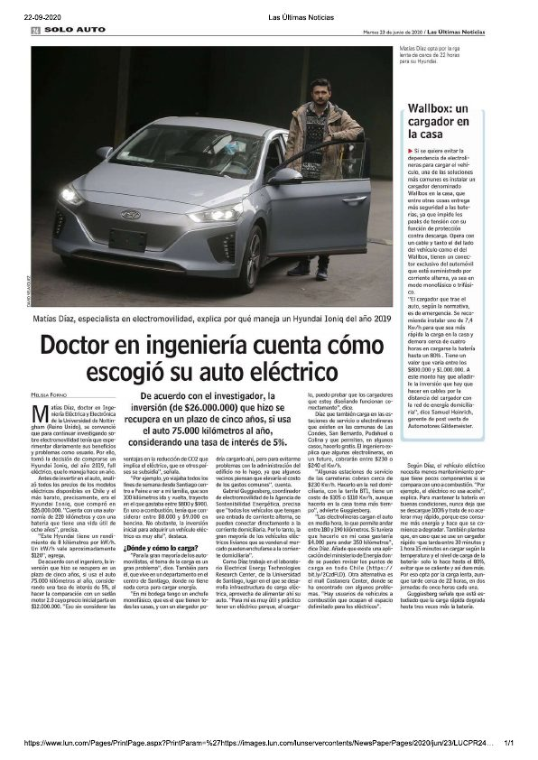
Las Últimas Noticias · 2020 · PDF
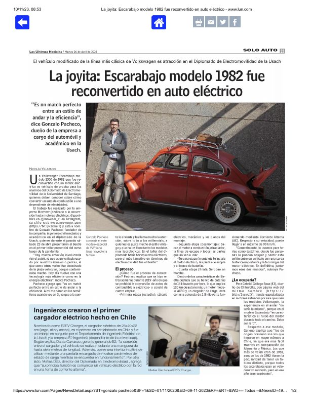
Las Últimas Noticias · 2023 · PDF
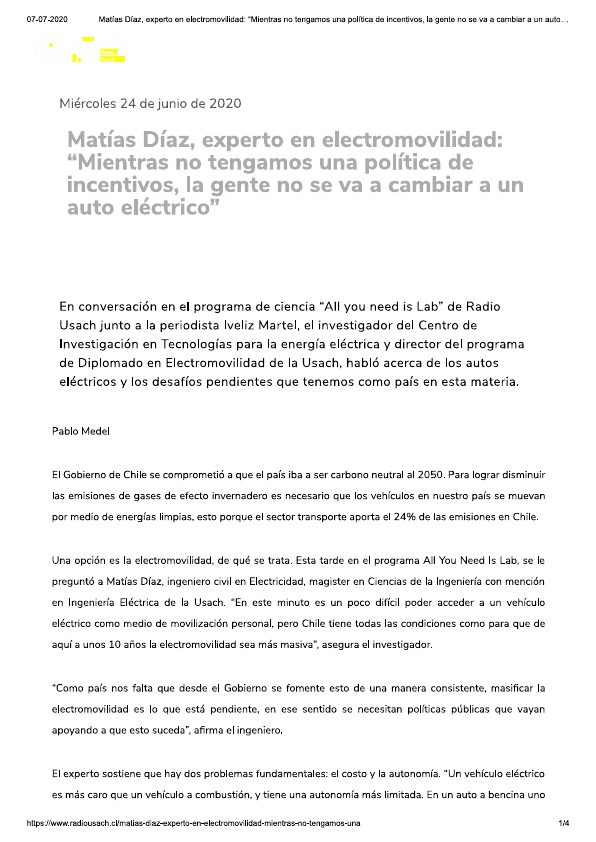
Radio Usach · 2020 · PDF
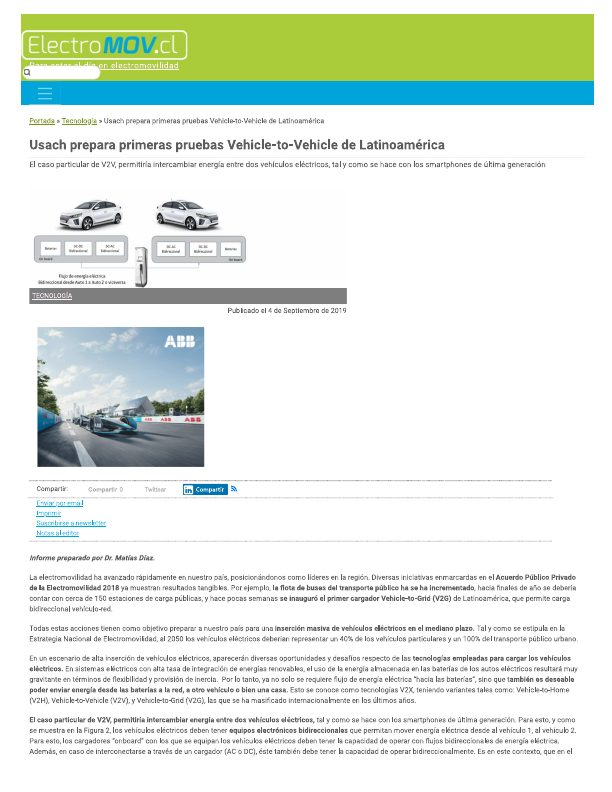
ElectroMOV.cl · 2019 · PDF
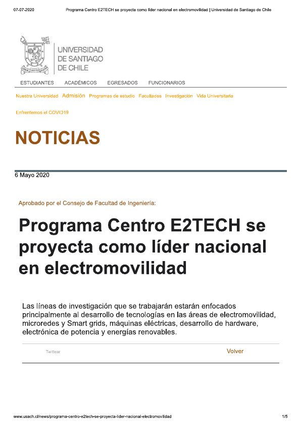
Usach al Día · 2020 · PDF
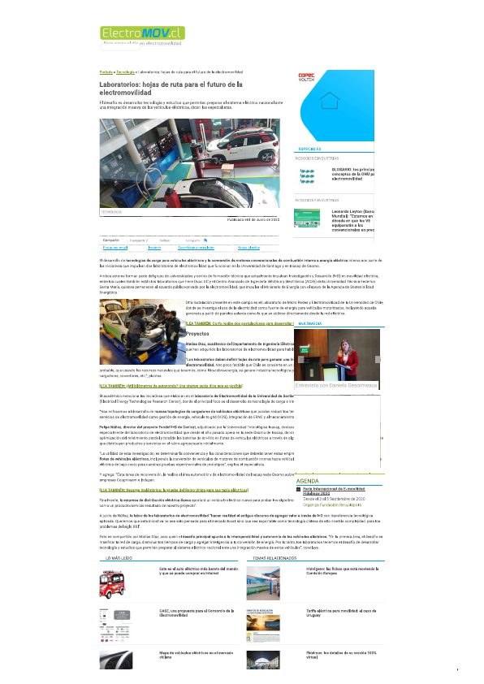
ElectroMOV.cl · 2020 · PDF
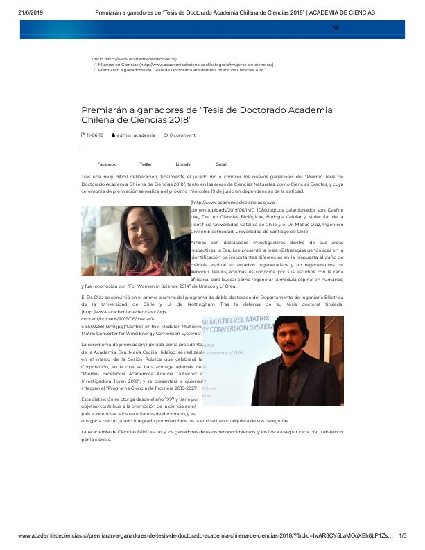
Academia Chilena de Ciencias · 2019 · PDF
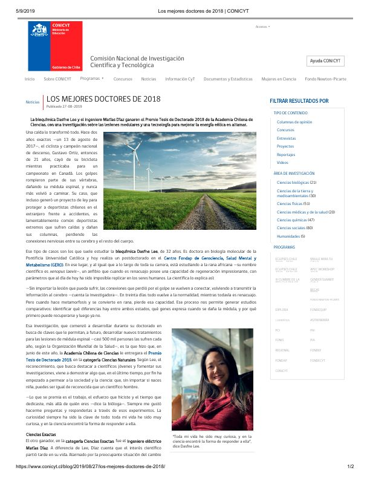
Conicyt · 2019 · PDF
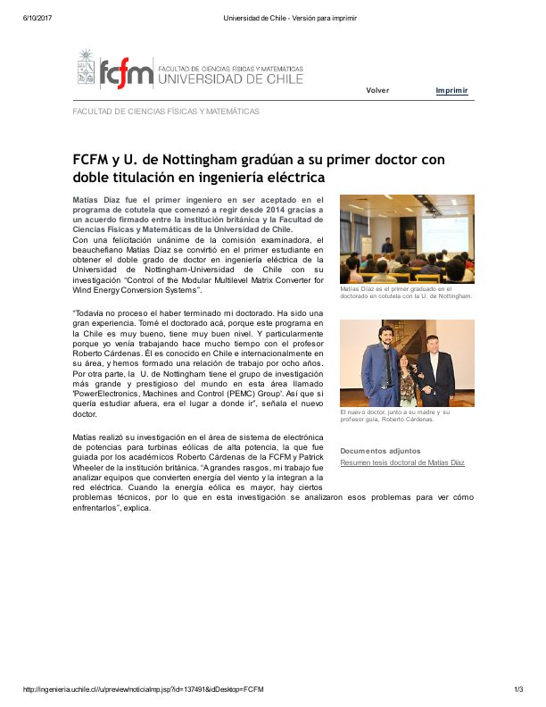
Universidad de Chile · 2017 · PDF
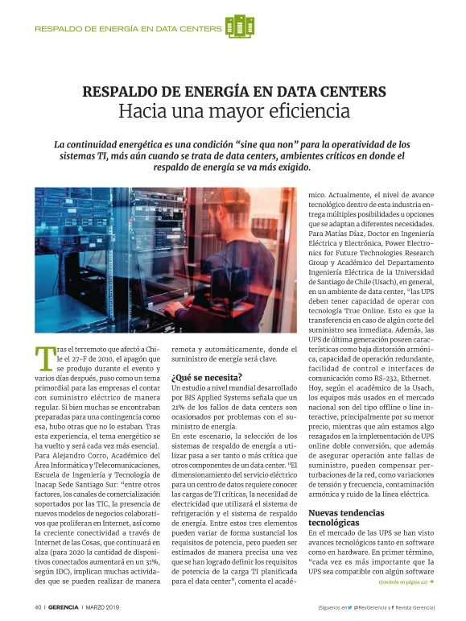
Revista Gerencia · 2019 · PDF
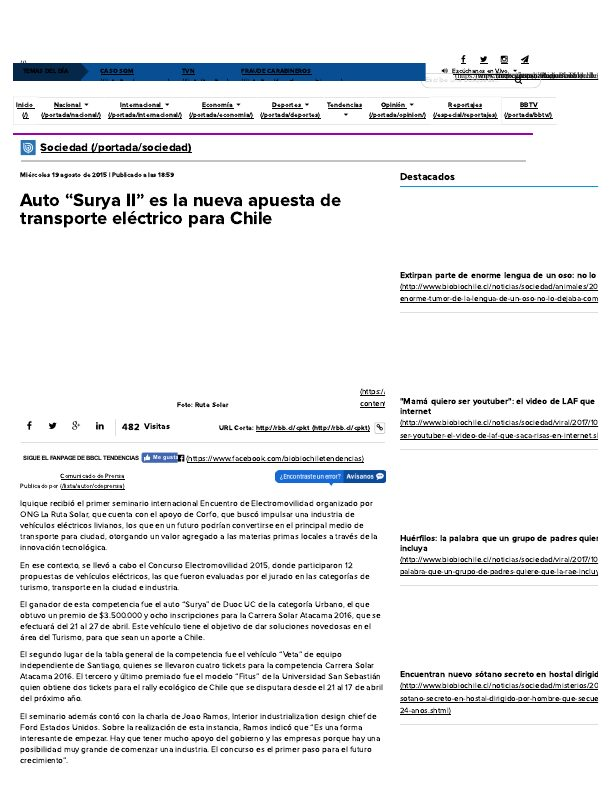
BioBioChile · 2015 · PDF
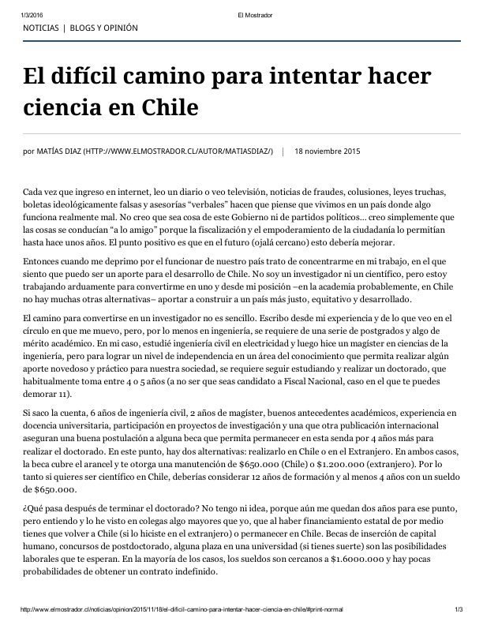
El Mostrador · 2015 · PDF
Entrevistas y reportajes en televisión, radio y medios digitales.
Seminarios y charlas abiertas del Diplomado en Electromovilidad USACH.
Material docente de cursos de pregrado y postgrado del DIE USACH.
Índice consolidado presentado en la postulación a Profesor Titular (junio de 2026).
| Fecha | Medio | Título | Tema |
|---|---|---|---|
| 01-mar-2025 | El Mercurio | Autos eléctricos empiezan a pagar permisos y la industria pide incentivos | Electromovilidad |
| 03-mar-2025 | Canal 24 Horas (TV) | Entrevista a Matías Díaz, director del Departamento de Ingeniería Eléctrica de la Universidad de Santiago | Nombramiento |
| 03-mar-2025 | Canal 24 Horas (web) | Autos eléctricos deberán pagar permiso de circulación este 2025 | Electromovilidad |
| 23-mar-2025 | Media Banco | El papel de la Usach en Lolla 2025: Instaló medidores de energía para mapear cuánto consumen los distintos escenarios | Investigación |
| 23-mar-2025 | Diario USACH | El papel de la Usach en Lolla 2025: Instaló medidores de energía para mapear cuánto consumen los distintos escenarios | Investigación |
| 23-mar-2025 | Ministerio de Energía | Medición energética en Lollapalooza 2025: una alianza para avanzar hacia festivales más sustentables | Investigación |
| 24-mar-2025 | Publimicro | El rol de la USACH en Lolla 2025: Instaló medidores de energía para mapear cuánto consumen los distintos escenarios | Investigación |
| 22-abr-2025 | Las Últimas Noticias | Los minerales chilenos que tiene un auto eléctrico | Electromovilidad |
| 29-abr-2025 | Revista Electricidad | Estudiantes del Departamento de Ingeniería Eléctrica de la Usach son reconocidos en ceremonia | Formación |
| 13-may-2025 | El Mercurio / DIE USACH | El litio, el principal protagonista – Dr. Matías Díaz en cartas al Director de El Mercurio | Electromovilidad |
| 03-jun-2025 | Revista Electricidad / DIE USACH | Reciclaje en el sector energético y electromovilidad ferroviaria en Chile (Dr. Matías Díaz y Dr. Enrique Espina) | Electromovilidad |
| 09-jun-2025 | El Mercurio / DIE USACH | Los diversos tipos de baterías de litio – Dr. Matías Díaz en El Mercurio | Electromovilidad |
| 14-jul-2025 | Revista Electricidad (revistaei.cl) | OLADE y USACH firman convenio para fortalecer capacidades en transición energética en América Latina y el Caribe | Investigación |
| 15-jul-2025 | Revista Electricidad | DIE USACH recibe visita de centro español para explorar futuras colaboraciones en electromovilidad | Investigación |
| ago-2025 | USACH (usach.cl) | Usach consolida liderazgo: único proyecto chileno de electromovilidad adjudicado en I+D Tecnologías Avanzadas 2025 – cargador modular ultrarrápido V2X | Investigación |
| ago-2025 | USACH / Innovo | E2 Ingeniería: Spin-off de la USACH revoluciona la electromovilidad con cargadores inteligentes de diseño chileno | Investigación |
| 04-sep-2025 | Radio Cooperativa (web) | Fondas a diésel: el costo ambiental de nuestras celebraciones (columna de opinión) | Opinión |
| 05-sep-2025 | Diario USACH | Adiós al mito del auto caro: La nueva generación de eléctricos bajo $20 millones | Electromovilidad |
| 17-sep-2025 | El Desconcierto | Competencia directa a los vehículos tradicionales: Amplia oferta de automóviles eléctricos por debajo de los $20 millones | Electromovilidad |
| 26-sep-2025 | DIE USACH | Por segundo año consecutivo el Dr. Matías Díaz es reconocido dentro del 2% de los científicos más citados en el mundo (Stanford/Elsevier 2023-2024) | Reconocimiento |
| 28-sep-2025 | El Mercurio | A pesar de avance en electromovilidad, regiones tienen menos del 10% de los buses que Santiago | Electromovilidad |
| 29-sep-2025 | Revista Electricidad (revistaei.cl) | Académico DIE-Usach es reconocido dentro del 2% de los científicos más citados en el mundo | Reconocimiento |
| oct-2025 | USACH (usach.cl) | Investigación USACH – Proyecto I+D Tecnologías Avanzadas 2025: infraestructura de carga ultra-rápida y modular para vehículos eléctricos | Investigación |
| 07-oct-2025 | Ciencia en Chile | Por segundo año consecutivo el Dr. Matías Díaz es reconocido dentro del 2% de los científicos más citados en el mundo | Reconocimiento |
| 30-oct-2025 | Revista Electricidad (revistaei.cl) | Matías Díaz: "El futuro será eléctrico: hacia 2050, el consumo global se duplicará" | Electromovilidad |
| 2025 | Diario USACH | Políticas públicas para el sector eléctrico – análisis de la necesidad de incentivos estatales para el auto eléctrico | Opinión |
| 02-dic-2025 | USACH al Día (usach.cl) | Investigación de vanguardia y compromiso con el desarrollo: Facultad de Ingeniería premia a sus Proyectos Destacados 2025 | Reconocimiento |
| 04-dic-2025 | Canal 13 (T13 Central) | Comienza a regir el próximo año el reglamento que permite convertir vehículos a combustible en autos eléctricos | Electromovilidad |
| 05-dic-2025 | t13.cl / DIE USACH | Reglamento permitirá la conversión de vehículos a combustión en eléctricos en 2026 — Matías Díaz para Tele13 | Electromovilidad |
| 09-dic-2025 | CNN Chile (CNN Prime) | Ya es ley la normativa para convertir autos a combustible en eléctricos | Electromovilidad |
| 12-dic-2025 | CNN Chile (Agenda Motor) | Conversión eléctrica: la nueva vida de autos clásicos bajo la ley de electromovilidad | Electromovilidad |
| 18-dic-2025 | Cooperativa.cl / DIE USACH | El potencial del "retrofit" en Chile – columna de opinión Matías Díaz | Opinión |
| Fecha | Medio | Título | Tema |
|---|---|---|---|
| 20-ene-2023 | VRIIC USACH | Spin off creada por investigadores USACH busca impactar a la industria de la electromovilidad en Chile (E2 Ingeniería) | Investigación |
| jun-2023 | USACH al Día | Departamento de Ingeniería Eléctrica acerca la electromovilidad a la comunidad universitaria (charla + test drive MINI) | Electromovilidad |
| 2023 | DIE USACH | Dr. Matías Díaz adjudica FONDECYT 2023 – proyecto cargador ultrarrápido EV con V2G (~$910 millones) | Investigación |
| 2023 | VRIIC USACH | USACH adjudica FONDEQUIP Mayor 2023 con financiamiento de casi mil millones de pesos | Investigación |
| 2023 | Prensa / Evento (Valdivia) | Presentación sobre electromovilidad – participación en foro especializado (Valdivia) | Electromovilidad |
| nov-2023 | Las Últimas Noticias | La joyita: Escarabajo modelo 1982 fue reconvertido en auto eléctrico (cargador E2 Ingeniería / USACH) | Electromovilidad |
| Fecha | Medio | Título | Tema |
|---|---|---|---|
| 11-ene-2022 | Las Últimas Noticias | Estos son los 5 autos que sacaron mejor nota en seguridad en Europa | Electromovilidad |
| 18-ene-2022 | Las Últimas Noticias | Futuros mecánicos ahora se entrenan con autos eléctricos | Formación |
| 25-ene-2022 | USACH al Día (usach.cl) | Premios Icono 2021 relevan al capital humano de la Facultad de Ingeniería (Mencionado) | Reconocimiento |
| 27-ene-2022 | Las Últimas Noticias | El Cybertruck de Tesla va tomando forma | Electromovilidad |
| 21-feb-2022 | Agencia de Sostenibilidad Energética | USACH realizará quinta versión del Diplomado en Electromovilidad: Tecnología, Políticas Públicas y Modelos de Negocio | Electromovilidad |
| Fecha | Medio | Título | Tema |
|---|---|---|---|
| 10-feb-2021 | Electricidad | Centro de Aceleración Sostenible de Electromovilidad afina detalles para su debut | Electromovilidad |
| 15-feb-2021 | Revista Electricidad (revistaei.cl) | Electromovilidad: Centro de Aceleración Sostenible afina los detalles para su debut | Electromovilidad |
| 06-mar-2021 | Las Últimas Noticias | A la venta el primer auto que se maneja solo: el Honda Legend Sensing Elite | Electromovilidad |
| 19-mar-2021 | Las Últimas Noticias | Buses eléctricos chinos se probaron en Chile para ver cómo funcionaban en la ruta | Electromovilidad |
| 23-mar-2021 | Las Últimas Noticias | En este cuatriclo eléctrico se puede andar solo a 55 km/hora | Electromovilidad |
| 30-mar-2021 | Revista Electricidad | Todo listo para la tercera versión del diplomado de electromovilidad de la Universidad de Santiago | Electromovilidad |
| 10-may-2021 | energia.gob.cl (Ministerio de Energía) | Subsecretario de Energía da el vamos a la Comisión Asesora de Electromovilidad que permitirá acelerar su masificación en Chile | Electromovilidad |
| 03-jun-2021 | Radio Cooperativa | Desafíos de la electromovilidad en Chile (columna de opinión) | Opinión |
| jul-2021 | USACH Portal | Proyecto de la Facultad de Ingeniería que busca potenciar electromovilidad en Chile obtiene Premio Fidelmov 2021 | Reconocimiento |
| jul-2021 | Diario de Concepción | Premio Fidelmov 2021: proyecto de eficiencia energética busca potenciar la electromovilidad en Chile | Reconocimiento |
| jul-2021 | Diario USACH | Proyecto de eficiencia energética busca potenciar la electromovilidad en Chile (Premio Fidelmov 2021) | Reconocimiento |
| ago-2021 | DIE USACH | Matías Díaz asume como nuevo director del Departamento de Ingeniería Eléctrica USACH | Nombramiento |
| ago-2021 | Revista Electricidad (revistaei.cl) | Asume nuevo director en el Departamento de Ingeniería Eléctrica de la Usach | Nombramiento |
| 11-nov-2021 | Las Últimas Noticias | ¿Solo autos eléctricos en 2035? "Habrá que tener 130.000 puntos de carga", dice estudio | Electromovilidad |
| 18-nov-2021 | El Mercurio | Electricidad y tecnologías para una movilidad más limpia, inteligente y confortable | Electromovilidad |